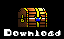
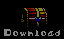

|
Ver.02 [2026/11/21] Windows版  |
・旧バージョン(Java版) Ver.01.06をRust言語に移植しました。 ・BGMが鳴るようになりました。 ・ゲームパッドで遊べるようになりました。 |
【旧バージョン (Java版)】
※旧バージョンはJavaアプリケーションにて作成されています。
プレー環境は『Java 2 Platform, Standard Edition 5.0 (J2SE 5.0)(Java 1.5.0_xx)』～ 8までのVMが実行できる環境が必要となります。
【注意！】Java SE 9より、アーキテクチャーが大きく変わり、プログラムが実行できない状態になりました。
|
Ver.01.06 [2008/07/19] |
・Windows上の実行において、SE音発声時に処理が一瞬停止する現象を措置しました。 ・タイトルバーにバージョンを表示するようにしました。 |
Ver.01.05 [2007/05/21]  |
・BGMにステージクリア、死亡音、ゲームオーバーを載せました。これに伴い、起動パラメータ bgm_external のデフォルト値を 0 (内部読み込み) としました。 |
Ver.01.04 [2007/02/19] |
・ゲーム中のスクロール処理の仕様を改良しました。 ・一部難易度を下げました。 ・一部ゲーム中のヒント表現を変えました。 |
Ver.01.03 [2007/01/25] |
・ゲーム中のローマ数字の表記に一部誤りがあったのを修正しました。 |
|
Ver.01.02 [2006/12/18] |
・一部のステージの背景と表現を改良しました(プレー的には何も変更ありません)。 |
|
Ver.01.01 [2006/12/07] |
・デフォルトのスクリーンサイズ倍率を2倍としました。 ・起動時において標準出力に開始時間、リソース読み込み完了時にその経過時間を表示するようにしました。 |
|
Ver.01.00 [2006/11] |
・初回リリース |